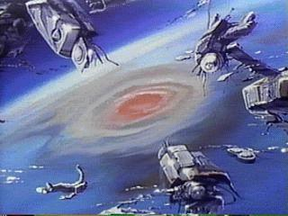
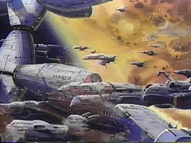
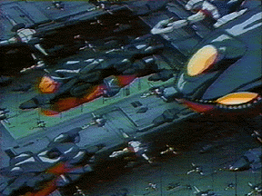

Although Veritechs and Cyclones are widely considered to be the
greatest technological marvels of the 21st century, no mecha can generate as
much wonder or romanticism as the massive REF starships that were in service
during the Invid Wars. The sheer size of the REF fleet is considered one of
humanity's greatest achievements. In 2020 Earth's stellar fleet consisted
solely of the SDF-3 Pioneer, a few outdated ARMD platforms, and
a handful of refurbished Zentraedi warships. During the Sentinels War/First
Invid War (2022-2032) the REF managed to capture the ancient Tirolian
shipyards built within Fantoma's outer asteroid belt. Although moderately
damaged from the Invid invasion of Tirol, REF technicians were able to repair
some of the massive factories and drydocks, and by 2024 the first
new-generation REF starship, the Exeter-class
escort Ark Angel, was launched. By the time the Invid Regis
invaded Earth for the first time in 2035 the REF starfleet consisted of over
500 warships, manned mostly by human, tirolian, and micronized zentraedi
crews.
Although Veritechs and Cyclones are widely considered to be the
greatest technological marvels of the 21st century, no mecha can generate as
much wonder or romanticism as the massive REF starships that were in service
during the Invid Wars. The sheer size of the REF fleet is considered one of
humanity's greatest achievements. In 2020 Earth's stellar fleet consisted
solely of the SDF-3 Pioneer, a few outdated ARMD platforms, and
a handful of refurbished Zentraedi warships. During the Sentinels War/First
Invid War (2022-2032) the REF managed to capture the ancient Tirolian
shipyards built within Fantoma's outer asteroid belt. Although moderately
damaged from the Invid invasion of Tirol, REF technicians were able to repair
some of the massive factories and drydocks, and by 2024 the first
new-generation REF starship, the Exeter-class
escort Ark Angel, was launched. By the time the Invid Regis
invaded Earth for the first time in 2035 the REF starfleet consisted of over
500 warships, manned mostly by human, tirolian, and micronized zentraedi
crews.
Following the end of the First Invid War and General T.R. Edwards' failed coup attempt in 2032, the surviving REF starships was reorganized into two separate fleets, initially named after planets in the Sol system to remind the REF soldiers of home. The first fleet, the REF Mercury Defense Group, was assigned to protect the planet Tirol, the Tirolian shipyards, and the main REF base of operations. The Mercury group remained in this role until the creation of the Robotech Guardian Forces in 2051. The second fleet was named the REF Venus Attack Group, and the famous war hero General Johnathan Wolff was assigned to command the fleet. Following a general refit to repair ship damage from the First Invid War the Venus group was sent to Earth to defend agains the Robotech Masters and the Invid in 2033 (the REF was unaware that the Robotech Masters had already been defeated by the Southern Cross armies in 2032).
Unfortunately the Venus group seemed to be ill-fated from the beginning. Two Tokugawa-class Cruisers and several escort ships failed to materialize from hyperspace when the fleet defolded in the Sol system. The loss of these ships has never been fully explained, although eventually flaws in the fold navigation systems were blamed for the loss. Then shortly after the Venus group's arrival Johnathan Wolff's flagship, the RSS Wolfpack, was hijacked by Dana Sterling and the 15th ATAC, who escaped and returned to Tirol along with over 200 surviving clones from the Robotech Masters' mothership. Low morale and systems failures continue to plague the Venus group for the next two years while General Wolff made a vain attempt to re-unite the surviving Earth governments and the badly-mauled Armies of the Southern Cross in preparation for an invasion by the Invid. In 2035 the Venus group was taken by surprise and destroyed when the forces of the Invid Regis and her forces invaded Earth. According to survivors the Venus fleet was completely destroyed in less than 15 minutes of combat with the Invid.
Meanwhile back at Tirol the third REF fleet, the REF Mars Attack Group, was being completed at the Tirolian shipyards. The Mars group was the first fleet to use both starships constructed at the Tirolian shipyards and ships constructed under contract by the Karbarran Space Works. In addition, since most of the veteran REF soldiers had been lost with the REF Venus group the Mars group consisted mostly of fresh graduates from the newly-opened REF Academies on Tirol. Based on information gained from Dana Sterling and the 15th ATAC and the fact that all contact had been lost with the Venus fleet, the Mars attack group was dispatched to earth in 2036 with orders to help Wolff fortify Earth, or attack the Invid command center if the Venus group was already destroyed. Unfortunately despite their high morale and optomism the Mars group was severly outgunned by the Invid, and the fleet was destroyed in Earth orbit shortly after arriving in the Sol system. Only a few survivors made it to Earth, including the now-famous war hero Lt. Scott Bernard.
 By now the REF high command was becoming increasingly concerned with the Invid Regis, almost to the point of panic. Even while the Mars fleet was being completed plans were under way to build the REF Jupiter Attack Group, the largest attack fleet ever constructed by the REF. The Jupiter group would be split into four different wings, commanded by the SDF-3 Pioneer, the haydonite cruiser Ark Angel, and the newly commissioned Thunderer-class battle fortresses SDF-4 Thunderer and SDF-5 Izumo. The Jupiter Attack Group would contain almost all of the remaining REF fleet, including most of the ships of the Mercury defense group. Only a few ships would be left behind to defend Tirol during the fleet's absence. The Jupiter attack group was intended to be a final drive to destroy the Invid. The REF high command even made a highly-controversial decision to include the experimental Neutron-S missiles with the fleet, to be used to destroy the surface of the Earth if defeat was imminent. On July 24, 2038 the Jupiter Attack Group folded from Tirol to Earth.
However, fate once again turned against the REF. The SDF-3 Pioneer failed to emerge from hyperspace when the fleet defolded in the Sol system. Rather than delay the attack to wait for the SDF-3, General Reinhardt took command of the fleet and reorganized it into two attack wings, led by the Thunderer and the Izumo. The Ark Angel would remain behind with a few ships and wait for the SDF-3 to appear. The Izumo led the first attack wave against Reflex Point, the Invid command center, but due to poor intelligence the REF fleet greatly underestimated the strength of the Invid forces. Despite new weapons such as the VAF-7 Shadow Fighters the first wing of the Jupiter attack group was crushed. Aboard the Thunderer General Reinhardt led the second wing against the Invid and prepared to use the Neutron-S missiles if necessary. However, on Earth a group of freedom fighters led by Scott Bernard managed to fight their way into Reflex Point and confronted the Invid Regis. Following some tense philosophical debate the Invid simualgents Ariel and Sera convinced the Regis to abandon Earth, and as Reinhardt launched the Neutron-S missiles the Regis and the Invid left the planet. The Regis' departure completely destroyed the Neutron-S missiles, the Thunderer, and the remains of the first and second attack wings. Only the Ark Angel and the reserve forces of the Jupiter attack group survived the final battle of the Second Invid War.
Following the end of the war Scott Bernard and Vince Grant took command of the Ark Angel and departed on a rescue mission to try and find the lost SDF-3 Pioneer, while the few remaining Jupiter group ships remained behind at Earth to help rebuild the planet. Back at Tirol, news of the Jupiter group's apparent victory was greeted with elation. However, the battle had been costly; the REF starfleet was in shambles, a mere shadow of its former self. Even though new ships could be built, too many experienced officers and crews had been lost. It would take years to rebuild the fleet to anywhere near its former size.
The REF would never get the time it needed. Less than a year after the Battle of Reflex Point the Invid, motivated by food shortages on their new home planet New Optera, again invaded Earth. The few surviving ships from the Jupiter group fought valiantly but were destroyed after a short battle. A brief distress call was sent to Tirol, but no useful information regarding the numbers or strengths of the invaders gained from the transmission. The REF high command was divided on what to do about this new threat. It would take years to build up a fleet that analysts felt would even have a chance of defeating the Invid. Finally, Colonels John Korcheck and Roger Harris received approval for a reconnaissance mission to Earth, to gauge the strengths and weaknesses of the new Invid forces. The new fleet would be named the REF Icarus Recon Group, and Korcheck was given command of the SS Icarus, the first Icarus-class command carrier which was specifically built for this mission. The Icarus Recon Group was launched from Tirol on January 1, 2044.
 The Icarus recon mission arrived safely in the Sol system and for 9 months conducted hit-and-run and valuable recon missions against the Invid. Unfortunately by this time the Invid had finished construction of their Orbital Space Hive network, which prevented the capital ships of the recon mission from getting close enough to support ground forces. Eventually the Icarus mission was destroyed from within by an unwilling traitor. An REF Intelligence Agent rescued from an Invid hive had an Infiltrator inplanted in her brain, and the Stage 6 Invid leader named Varron was able to use the unwilling agent to lead the Icarus into a trap. Varron allowed a resistance group to rescue several important prisoners from a hive installation on Earth, and based on false information from the compromised intelligence agent Korcheck and Harris decided to attempt a rescue. The Icarus was ambushed during the rescue operation and its escort forces were destroyed. Only the Icarus itself managed to escape and make an emergency fold back to Tirol.
Despite the loss of all ships except the Icarus, the mission was considered a success and preparations were made to launch yet another assault against the Earth. This mission would be led by the brand new Thunderer-class Fortress RSS Prometheus, and athough the fleet would not be as large as the Jupiter attack group the REF Prometheus Attack Group would be armed with the latest weapons and mecha Robotechnology had to offer. On July 4th, 2047 the Prometheus group folded to the Sol system an began a three-week siege against the Invid space hives. The battle was largely a stalemate, though most historians agree that had the siege continued the Prometheus mission would probably have lost. Fortunately the terran resistance launched Operation Emissary, a mission to covertly transport Invid sympathizers Sera and Marlene to New Optera to negotiate with the Regis herself. The plan was a success, and the Regis was so shocked by the atrocities the Stage 6 Invid had committed on Earth that she pulled out her forces from the Sol system. Deprived of their power base, the few Stage 6 Invid who remained behind were quickly defeated by the combined forces of the Prometheus mission, the terran resistance, and the Regis.
Following the end of the Third Invid War the majority of the Prometheus fleet returned to Tirol, where it became the backbone of the newly-constructed REF starfleet. In 2051 following the Local Group Galactic Conference the fleet was combined with other starfleets to form the Robotech Guardians Forces (RGF) Starfleet, the military arm of the Sentinels Alliance. Many of the surviving warships of the Prometheus mission are still in active service with the RGF fleet.
|  |
New and Updated REF Starships
|


 |
http://www.mcs.net/~deitrich/index.html deitrich@mcs.net |
Last Updated: |